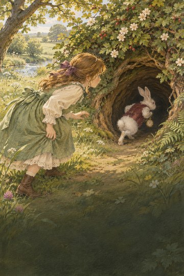
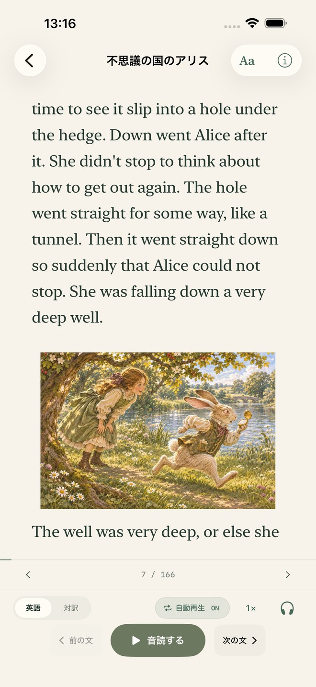
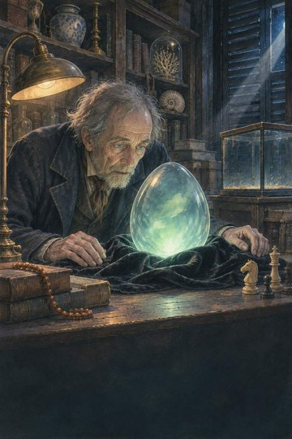
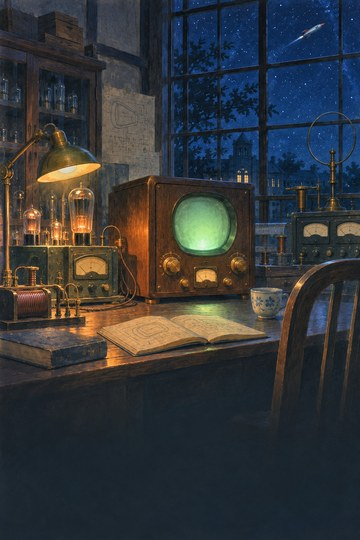
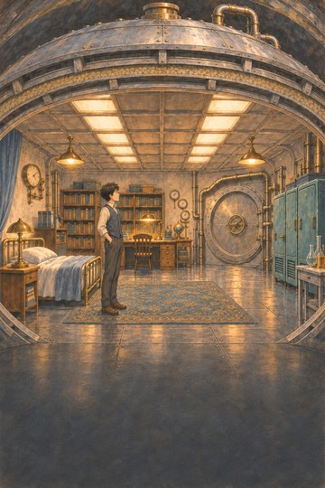
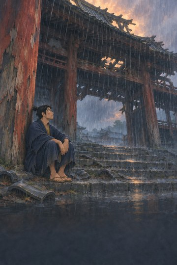

不思議の国のアリス
ルイス・キャロル
中学英語で、世界の名作を。
白ウサギを追いかけるアリス。探検隊が見つけた未知の台地。長い一文も短い英文に分け、物語を最後まで楽しめる英語に語り直しました。
iPhone / iOS 17以降

アップデート 1.6.0
このページは1.6.0の内容を紹介しています。現在の配信版はApp Storeで確認できます。

ルイス・キャロル
オスカー・ワイルド
コナン・ドイル
メアリー・シェリー
ジュール・ヴェルヌ
場面が変わるところや、心が動いた直後に。物語に沿って、575枚の挿絵を添えました。
挿絵をタップすると拡大でき、閉じると読んでいたページへ戻ります。表紙と挿絵はアプリに同梱しています。
表紙と挿絵は、本アプリ用にAIを用いて制作しました。
CLASSIC STORIES, RETOLD IN SIMPLE ENGLISH
出来事をひとつずつ、短い文で。
言葉の難しさをほどいて、物語はそのままに。
原作の一文をそのまま英語に置き換えるのではなく、伝える内容を整理し、複数の短い英文で説明し直しています。難しい一語も、身近な言葉でわかる表現へ。場面・会話・結末まで残し、物語全体を読みやすい英語につくり直しました。
原作の、長い一文
二人の若い紳士が、すっかりイギリスの兵隊のかたちをして、ぴかぴかする鉄砲をかついで、白熊のような犬を二疋つれて、だいぶ山奥の、木の葉のかさかさしたとこを、こんなことを云いながら、あるいておりました。
宮沢賢治『注文の多い料理店』冒頭
青空文庫の原文を読む ↗
アプリでは、7つの短い英文に。
実際に収録している英文です。一文ずつ、場面を思い浮かべながら読めます。
A STORY, AT YOUR PACE
気になる一文を確かめながら、
英語で読む時間を少しずつ。
長い一文は短く分け、難しい表現は説明し直す。中学英語を目安に、物語を丸ごと読みやすくしています。
英文をタップすると、その文に対応する自然な日本語訳へ。青空文庫の原文も別に参照できます。
音読しながら、今の文を目で追って。速度も文字の大きさも、読みやすい設定に変えられます。
ONE SENTENCE AT A TIME
「この文、どういう意味だろう」。
日本語で確かめたら、また英語のつづきへ。
一文ずつの対訳が、読む時間を支えます。主な単語の意味も訳のすぐ下に表示。詳しい語義もタップで確かめられます。
この文章で、対訳を確認する感覚をお試しください。
日本語訳は英文に合わせて制作したもので、原文とは別に表示します。
注文の多い料理店 / THE RESTAURANT OF MANY ORDERS
Two young men were walking deep in the mountains.
二人の若い男が山奥を歩いていました。
この英文に対応する日本語訳日本文学、ミステリー、空想科学。
全27作品から、気になる一冊を選べます。
コナン・ドイル
H・G・ウェルズ
サン＝テグジュペリ
スタンリー・G・ワインボウム

H・G・ウェルズ
H・G・ウェルズ
カレル・チャペック
ジュール・ヴェルヌ
クルト・ラスヴィッツ
蘭郁二郎
海野十三

海野十三

海野十三
芥川龍之介
新美南吉
中島敦
芥川龍之介

芥川龍之介
芥川龍之介
江戸川乱歩
太宰治
宮沢賢治
中学英語は制作上の目安です。固有名詞や、物語を伝えるために必要な言葉も含まれます。
READ. LISTEN. RETURN.
Apple音声ですぐに音読。0.5〜2倍速で、今の自分に合う速さを選べます。再生中の文を追いながら、画面をロックして聴くこともできます。
任意で音声合成モデル「Supertonic 3」（約380MB）を取得すると、iPhone内で英文から高品質な音声を生成できます。取得後は通信せずに音読できます。本文・対訳はダウンロードなしでオフライン閲覧できます。
ログイン・広告・アプリ内課金なし
THE JOY OF UNDERSTANDING
自分にとって読みやすい文章を、内容を楽しみながら読みつづける。「多読」の考え方をヒントに、やさしい英語と一文の対訳を組み合わせました。理論と参考文献はアプリ内でも紹介しています。
学習方針と参考文献について読みたいから、読む。
わかるから、つづく。
そんな英語の時間を。
名作も、SFも。自分にわかる英語から。